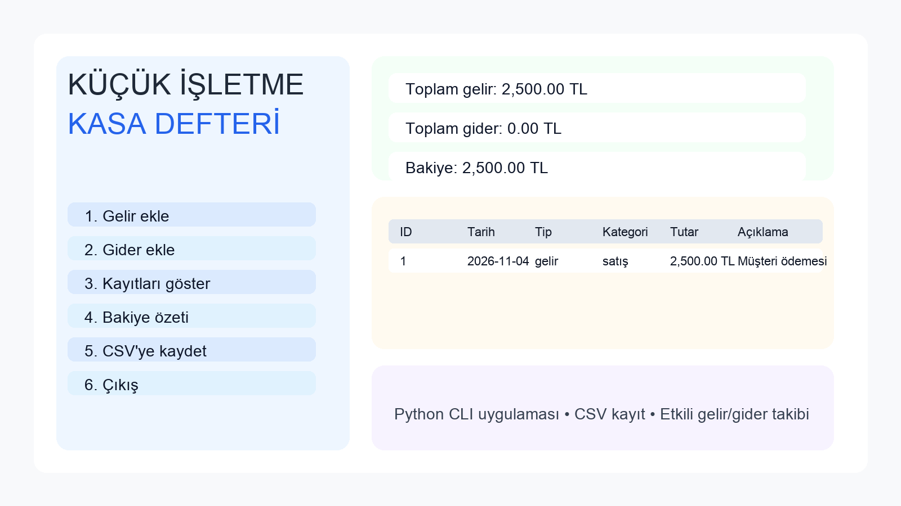

Her çalışma bir deneme, her deneme yeni bir öğrenme notu.
4 çalışma kartı
Not: İlk iki kart önceki ödevlerinden; son iki kart bu portfolyo için hazırlanan çalışan ön yüz demolarından oluşuyor. Son iki demodaki finans ve tekne bilgileri yalnızca örnektir.

PYTHON · KASA DEFTERİ01
Küçük İşletme Kasa Defteri
Küçük işletmelerin gelir ve gider kayıtlarını ekleyip bakiyelerini takip edebildiği, verileri CSV dosyasına kaydeden bir komut satırı uygulaması.
Ne öğrendim? Girdi doğrulama, fonksiyonlara ayırma, bakiye hesaplama, CSV dosyasıyla çalışma ve birim testleri hazırlama.
1.000 konteynerlik yük için; geminin konteyner taşımasını, kapasitesinin yeterli olmasını, yükleme tarihinde müsaitliğini ve limana 500 deniz milinden yakınlığını sırayla kontrol eden algoritma.
Ne öğrendim? Gerçek bir iş problemini girdilere, açık uygunluk koşullarına ve izlenebilir bir karar akışına dönüştürmeyi.